弾性力学
変形しない剛体だけでも身の回りの様々なものをシミュレーションできるが， 布や糸，クッションや輪ゴムなど柔らかいもの(変形するもの)も扱えれば，より多くのシーンに対応できる． 変形する物体において，変形後に元の形状に戻る物体のことを弾性体(Elastics Body)という． また，このときの変形を弾性変形と呼ぶ． 一方，変形後の形状を保つような変形を塑性変形と呼ぶ． 例えば，粘土や大きな力を加えて変形させたときの金属やプラスチックなどである． 通常の物体は弾性体，塑性体両方の性質を持ち， ある一定の力までは弾性変形で元の形状に戻るが， 大きな力により大きな変形が起こると塑性変形となり，形状が変化したままになってしまう (このときの応力を降伏応力という)．
Bulletではバネ-質点系というモデルを用いて弾性体を扱うことができる． ここでは弾性体について，1次元，2次元の弾性体に分けて，順番に説明するとともに， Bulletでの設定方法について学ぶ． なお，注意点として，剛体と異なり弾性体はその動きを1つの位置と姿勢で表すことはできないので， 形状を点とその間の接続により表し，各点の動きで全体の動きを表す．
1次元弾性体
力を加えると変形し，離すと元に戻るものとしては，「バネ」(spring)が一番分かりやすいだろう． 物体をバネと質点(mass)の集合で表し，各バネの伸び縮みを計算することで弾性体の変形をシミュレーションする手法を， バネ-質点系(Mass-springs System)という．
例として糸をバネ-質点系でシミュレーションすることを考えてみよう(図1)． 糸をまず点(図1中段の赤点)とそれをつなぐリンク構造で表現することを考える． ちょうど前回のジョイントを使って，棒(線分)がPoint to Point Constraintで接続されているような状態を思い浮かべてみよう． さて，この状態でも(動きの不自然さなどを考えなければ)伸び縮みしない糸の動きを再現できるだろう． しかし，もし糸が伸び縮みするとしたらどうだろう． 糸の伸縮を計算するために，各点の間にバネを設定してみよう(図1下段)． こうするとバネが伸縮することで全体としての伸縮も計算できることになる． もちろん，バネが非常に硬ければ，伸縮しない糸もある程度再現できるだろう． これがバネ-質点系によるシミュレーションである．バネは伸縮を再現するためだけでなく， シミュレーションを安定化させるのにも役立っている．

質点とばねによる近似
かかった力をFとバネの伸縮の関係はフックの法則より，
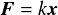
となる．ここで，xはバネの元の長さ(自然長)からの伸び or 縮んだ量， kはばね定数と呼ばれ，ばねの強さを表す．
シミュレーションではまず，各質点にかかる力(重力や空気抵抗，衝突による力など)を計算して， 質点を運動方程式に従って移動させる． そして，その移動量から各ばねの元に戻ろうとする力をフックの法則に従って求め， その力により質点の位置を修正する． 位置の修正は何回か反復され，収束するまで繰り返される． これが大まかな手順である．
以下でBulletにおける弾性体の設定方法を説明していく．なお，Bulletでは剛体に対して柔軟に変形する物体としてSoft Body (btSoftBody)と呼んでいる．
ライブラリの準備
btSoftBodyを扱うためにはインクルード，ライブラリファイルを追加する必要がある．
Bulletを最低限動かすのに必要なのは， BulletCollision, BulletDynamics, LinearMathの3つであると
以前に説明した．
剛体だけの場合には必要ないのだが，btSoftBodyを使う場合にはもう一つ，BulletSoftBodyを追加する．
ビルドしていない人はBulletのビルド方法を再度参照して，
BulletSoftBodyをビルドしよう．shared/libにBulletSoftBody_*.libがすでにある場合はビルドする必要は無い．
ビルドすると， BulletSoftBody.lib がlibフォルダ内にできるので，これらをshared/libにコピーする．
インクルードファイルとライブラリファイル
ソースコードを変更する前に，以前と同じようにこれまで作成したコードをフォルダごとコピーして，
新しい名前のフォルダから実行するようにしておこう．
まず，btSoftBodyを扱うために以下のインクルードファイルを追加する．
#include <BulletSoftBody/btSoftRigidDynamicsWorld.h> #include <BulletSoftBody/btSoftBodyRigidBodyCollisionConfiguration.h> #include <BulletSoftBody/btSoftBodyHelpers.h> #include <BulletSoftBody/btSoftBody.h>
そして，プロジェクトのプロパティで
リンカー → 入力 → 追加の依存ファイル
にBulletSoftBody.libを追加設定する． ただし，DebugモードとReleaseモードでファイルが異なる(ファイル名は同じ)ので注意． もしくは，main.cppの冒頭に
#pragma comment (lib, "BulletSoftBody.lib")
と記述することでもライブラリをリンクできる(Visual C++の場合)．
Bulletワールドの初期化部分の変更
これまで，btDiscreteDynamicsWorldによりBulletのワールドを生成してきたが，
btSoftBodyを使う場合は，btSoftRigidDynamicsWorldを用いる．
また，btDefaultCollisionConfigurationの代わりにbtSoftBodyRigidBodyCollisionConfigurationを用いる．
以下にBulletワールドの初期化の例(InitBullet関数)を示す．
// 衝突検出方法の選択(デフォルトを選択) btDefaultCollisionConfiguration *config = new btSoftBodyRigidBodyCollisionConfiguration(); btCollisionDispatcher *dispatcher = new btCollisionDispatcher(config); // ブロードフェーズ法の設定(Dynamic AABB tree method) btDbvtBroadphase *broadphase = new btDbvtBroadphase(); // 拘束(剛体間リンク)のソルバ設定 btSequentialImpulseConstraintSolver* solver = new btSequentialImpulseConstraintSolver(); // Bulletのワールド作成 g_dynamicsworld = new btSoftRigidDynamicsWorld(dispatcher, broadphase, solver, config, 0);
衝突検出の設定とワールド作成部分が変更されているので， 自分のコードでも該当部分を変更してみよう． g_dynamicsworldはグローバル変数で，
btSoftRigidDynamicsWorld* g_dynamicsworld; //!< Bulletワールド
と定義される．
さらにbtSoftBodyを設定する際にワールドの情報を渡す必要がある． グローバル変数として，
btSoftBodyWorldInfo g_softBodyWorldInfo;
を定義し，InitBullet関数でワールド作成後，
// btSoftBodyWorldInfoの初期化・設定 g_softBodyWorldInfo.m_dispatcher = dispatcher; g_softBodyWorldInfo.m_broadphase = broadphase; g_softBodyWorldInfo.m_sparsesdf.Initialize(); g_softBodyWorldInfo.m_gravity.setValue(0, -9.8, 0); g_softBodyWorldInfo.air_density = 1.2; g_softBodyWorldInfo.m_sparsesdf.Reset();
などとして，SoftBodyのための各種設定を行っておく．
Bullet Physics ver3.09でのbtSoftBodyのマウスピックについて
サンプルプログラム2ではbtSoftBodyについてもこれまでのbtRigidBodyと同様にマウス左ドラッグで移動させるようにしていますが， Bullet Physicsの現バージョン(こちらで確認したのはver3.09)において， マウスクリックした位置に対応するノードを得るために使っているrayTest関数が上手く働かず，プログラムが落ちてしまう現象を確認しています． そのため，代わりとなるMouse関数をこのファイルに載せたので， main.cppのMouse関数部分をこちらで置き換えるようにしてください(intersectRaySphereという関数も一緒にコピペするように)．
なお，btSoftBody::rayTest関数およびrayFaceTest関数はReleaseモードだと動かなかったため， ReleaseモードではbtSoftBodyを構成するノード(頂点)と交線の交差判定を"全探索"で行っています． そのため，ノード数が多いモデルを読み込むと計算に時間がかかり遅くなる可能性があります． 注意してください．
1次元弾性体の追加
btSoftBodyの形状は，三角形メッシュ(ポリゴン)として入力するか，
Bullet側で用意された生成関数を使って生成する．
3Dモデルファイルを用いた三角形メッシュの読み込みは後で学ぶ．
ここではBulletにある1次元弾性体(ロープ)の生成関数を使ってみる．
btSoftBodyHelpersクラスはbtSoftBodyの形状を設定するためのヘルパークラスであり， 1次元のロープの他に四角形の布のような2次元弾性体， 球(楕円体)形状の3次元弾性体などを作成してくれる関数が用意されている(後で述べるがメッシュ読み込みのための関数もある)． ここではbtSoftBodyHelpers::CreateRope関数を使って1次元の弾性体(ロープ)を追加してみる． CreateRope関数を用いたロープ形状の作成例を以下に示す．
btSoftBody* rope = btSoftBodyHelpers::CreateRope(g_softBodyWorldInfo,
btVector3(-1, 0, 0), // ロープの端点1
btVector3( 1, 0, 0), // ロープの端点2
16, // 分割数(ばねの数)
1+2); // 端点の固定フラグ
rope->m_cfg.piterations = 4; // ばねによる位置修正の最大反復回数
rope->m_materials[0]->m_kLST = 0.5; // 剛性(Linear Stiffness Coefficient) (変形のしやすさ)
rope->setTotalMass(1.0); // 全体の質量
rope->getCollisionShape()->setMargin(0.01);
g_dynamicsworld->addSoftBody(rope);
btSoftBodyとしてropeというオブジェクトを生成し， CreateRope関数を使ってロープ形状の弾性体を作り， 各種パラメータの設定後，btSoftRigidDynamicsWorld::addSoftBody関数でbtSoftBodyをワールドに追加している (このときRigidBodyと同じく衝突フィルタリングも設定できる)． CreateRope関数の最後の引数は端点の固定フラグで， 0なら両方フリー,1 or 2で片方だけ固定，3(=1+2)で両端点固定となる．
btRigidBodyの時と同様にbtSoftBodyも手動で破棄する必要がある． 例えば，CleanBullet関数のbtRigidBodyの破棄のところの処理を以下のように書き換える．
// 衝突オブジェクトの破棄
for(int i = g_dynamicsworld->getNumCollisionObjects()-1; i >= 0; --i){
btCollisionObject* obj = g_dynamicsworld->getCollisionObjectArray()[i];
// オブジェクトがRigid Bodyの場合の破棄
btRigidBody* body = btRigidBody::upcast(obj);
if(body && body->getMotionState()){
delete body->getMotionState();
}
// オブジェクトがSoft Bodyの場合の破棄
btSoftBody* softBody = btSoftBody::upcast(obj);
if(softBody){
static_cast<btSoftRigidDynamicsWorld*>(g_dynamicsworld)->removeSoftBody(softBody);
}
else{
static_cast<btSoftRigidDynamicsWorld*>(g_dynamicsworld)->removeCollisionObject(obj);
}
g_dynamicsworld->removeCollisionObject(obj);
delete obj;
}
btSoftBodyの描画(サンプルプログラム2にはあらかじめ含まれているので興味がある場合のみ読むこと)
最後にbtSoftBodyをOpenGLを使って描画する．
btRigidBodyの時と違い，btSoftBodyはそれぞれの質点座標値を取得して，
線(GL_LINE_STRIPなど)か面(GL_POLYGONなど)として描画する．
以下にbtSoftBodyを描画する関数の例を示す．
void DrawBulletSoftBody(btSoftBody* sbody)
{
// btSoftBodyに面(face)がない場合は線として描画
if(sbody->m_faces.size() == 0){
glBegin(GL_LINE_STRIP);
for(int i = 0; i < sbody->m_nodes.size(); ++i){
const btSoftBody::Node &node = sbody->m_nodes[i]; // 頂点ノード(質点)
btVector3 p = node.m_x; // 頂点座標
glVertex3f(p.x(), p.y(), p.z());
}
glEnd();
}
// 面(face)がある場合はポリゴンとして描画
for(int i = 0; i < sbody->m_faces.size(); ++i){
const btSoftBody::Face &face = sbody->m_faces[i];
glBegin(GL_POLYGON);
for(int j = 0; j < 3; ++j){
const btSoftBody::Node* node = face.m_n[j]; // 面を構成する頂点ノード
btVector3 p = node->m_x; // 頂点座標
btVector3 n = node->m_n; // 頂点法線
glNormal3f(n.x(), n.y(), n.z());
glVertex3f(p.x(), p.y(), p.z());
}
glEnd();
}
}
ロープの場合は面がないので，GL_LINE_STRIPで描画される． この関数を呼び出すために，DrawBulletObjects関数も変更する必要がある． 具体的には最初にbtRigidBodyかbtSoftBodyかを判断して，描画を切り替える． こちらは長くなるのでこのファイルを参照．

ロープ
練習問題1
前回のプロジェクトをフォルダごとコピーして新しいプロジェクトとし，上記の1次元弾性体(ロープ)を実装してみよ．
練習問題2
btSoftBodyの追加のところで設定していた，
rope->m_materials[0]->m_kLST = 0.5;
ではロープの剛性を設定している(ばね定数のようなもの)．この値をいろいろ変えて試してみよう．
練習問題3(option)
btSoftBody::appendAnchorメンバ関数を使うとbtSoftBodyとbtRigidBodyを接続することができる． btRigidBodyを一つ追加し，ロープの先につなげてみよう． 片方の端点をフリーにしたロープとそれに接続する剛体を定義し，以下のようにして接続させる．
rope->appendAnchor(rope->m_nodes.size()-1, rigidbody);
ここではロープの最後の点(ノード番号:rope->m_nodes.size()-1)に接続したが， もう一方の端点に接続する場合は第1引数に0を指定する．appendAnchorを実行したときのこのノード座標値が剛体側の接続点となる．

ロープと立方体
2次元弾性体
布のように2次元的な広がりを持つ弾性体も我々にとってとても身近なものである． 2次元弾性体も1次元の時と同じくバネ-質点系でモデル化できる． 2次元の場合は質点を格子状に配置し，各格子点同士を下図のようにバネで接続する．
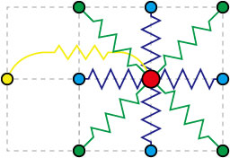
2次元バネ-質点系
図では中央の赤い点とその周囲の更新点との間に配置されるバネを示している． 最も単純な場合は上下左右に接続する青いバネのみが用いられる． より剛性を強くしたい場合は斜め方向のばね(緑のバネ)も用いられる． また，布を接線方向に圧縮したときに起こる座屈(Buckling)もシミュレートしたい場合は， 1つ飛ばした位置にも接続する(黄色のバネ)．
質点の配置とバネの接続方法が変化しただけで後の処理は1次元の場合と同じである．
Bulletでの設定
Bulletでは単純な四角形の布のような弾性体を簡単に追加する機能を持つ．
btSoftBodyのためのワールド初期化や描画に関しては1次元の場合と同じなので省略する．
Bulletワールドに2次元弾性体(四角形)を追加するには，
btSoftBodyHelpers::CreatePatch関数を用いる．
CreatePatch関数を用いた例を以下に示す．
btScalar sl = 1.0;
btScalar y = 0.0;
int res = 9;
btSoftBody* cloth = btSoftBodyHelpers::CreatePatch(g_softBodyWorldInfo,
btVector3(-sl, y, -sl), // 四隅の座標 00
btVector3(-sl, y, sl), // 四隅の座標 10
btVector3( sl, y, -sl), // 四隅の座標 01
btVector3( sl, y, sl), // 四隅の座標 11
res, res, // 分割数(2方向)
1+2+4, // 四隅の固定フラグ(1,2,4,8)
true); // 斜め方向のばねのON/OFF
cloth->getCollisionShape()->setMargin(0.01);
cloth->setTotalMass(0.02); // 全体の質量
cloth->m_materials[0]->m_kLST = 0.5;
g_dynamicsworld->addSoftBody(cloth);
btSoftBodyとしてclothというオブジェクトを生成し， CreatePatch関数を使って四角形状の弾性体を作り， 各種パラメータの設定後，btSoftRigidDynamicsWorld::addSoftBody関数でbtSoftBodyをワールドに追加している． CreatePatch関数では4隅の座標と縦横の分割数，固定フラグ，斜め方向のばねの有無を指定する． 上記の例では4隅の座標値の2番目と3番目が入れ替わっているように思うかもしれないが， これはそのまま設定すると法線方向が下向きになってしまったので逆向きになるように設定しているからである． 下図に設定した結果を示す．
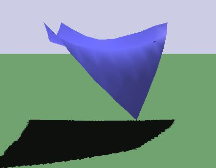
3点が固定された布
空気抵抗について
布や紙のような薄い物体は空気の流れの影響を大きく受ける．
例えば，紙吹雪や旗などである．
この風の影響を流体力学(Fluid Dynamics)を使って正確に計算することはとてもチャレンジングなタスクである
(例えば，[Guendelman et al. SIGGRAPH2005]など)．
しかし，今のところ多くの計算コストが必要で，リアルタイムのアプリケーションに適応するのは難しい．
そこでBulletでは流体力学の代わりに航空力学(Aerodynamics)を使って，
2次元弾性体への風の影響を計算している．
航空力学を使うと風の流れにより飛行機の翼やヘリコプターのブレードなど(Aerofoilという)にかかる力を近似的に計算できる． まず，下の図のようにある角度(これを迎角(Angle of attack)という)で傾いた翼の断面を考える．

抗力と揚力
このとき，翼の周りの空気の流れにより2種類の力，
上昇させようとする力である揚力 (Lift force)と
風により後ろに引っ張られる力である抗力(Drag force)が働く．
航空力学ではこれらの力を以下の式を使って計算する．
(Lift force)と
風により後ろに引っ張られる力である抗力(Drag force)が働く．
航空力学ではこれらの力を以下の式を使って計算する．
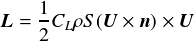

ここで，は揚力係数，
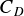は抗力係数，
 は空気密度，
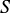は翼の気流方向への投影面積，
は気流と翼との相対速度，
は空気密度，
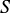は翼の気流方向への投影面積，
は気流と翼との相対速度，
 は法線である．
これらの式を用いると詳細な周りの気流を流体力学で計算しなくてもある程度の値は推測可能となる．
は法線である．
これらの式を用いると詳細な周りの気流を流体力学で計算しなくてもある程度の値は推測可能となる．
Bulletで航空力学を用いて風による影響を計算するには， btSoftBodyに抗力/揚力係数と計算モデル，気流速度を設定してやればよい． 例えば，前節で定義した布モデルにこれを設定するには以下のようにする．
// Lift, Drag Forceのための係数[0,∞] cloth->m_cfg.kLF = 0.05; cloth->m_cfg.kDG = 0.01; cloth->m_cfg.piterations = 2; // ばねによる位置修正の最大反復回数 cloth->m_cfg.aeromodel = btSoftBody::eAeroModel::V_TwoSidedLiftDrag; cloth->setWindVelocity(btVector3(4.0, 0.0, 0.0));
ここで計算の反復回数(piterations)を2とした．この値があまり大きいと逆に計算が不安定になるようなので注意． aeromodelは揚力と抗力を計算する時の方法で，ここでは頂点ごと(V)，法線方向を風の向きに合わせて反転(TwoSided)， 揚力と抗力を考慮(LiftDrag)としている． その他の設定できる方法はbtSoftBody.hの80行目あたりに書かれている(eAeroModel構造体)のでそちらを参照．
btSoftBodyに風の影響を追加する場合は，Collision Filteringに注意しよう． 少なくともシーン中の1つのbtRigidBody(床など)と衝突するようにしておかないと， 風の影響がうまく働かないことがある．
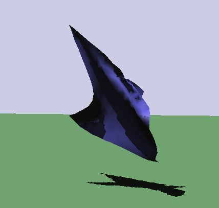
風を設定した例
練習問題4
上記の2次元弾性体を実装してみよ．
練習問題5
分割数や固定フラグなどを変更してみて，各パラメータによる変化を確かめてみよう． また，setTotalMass関数を使うと全体の質量， 1次元の時と同じようにm_kLSTを使うと剛性も変えられるので試してみよう．
練習問題6(option)
btSoftBody::appendAnchorメンバ関数で布を棒形状の剛体と接続し，
旗を再現してみよう．また，航空力学を設定して旗を風でたなびかせてみよう．
2次元ではノード番号は下図のようになっている．
図中の[00],[10],[01],[11]は上記のCreatePatch定義例の引数にコメントとして書いてある端点番号である．
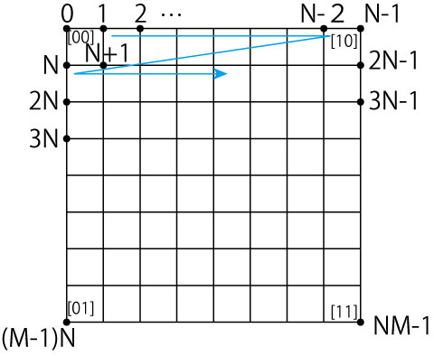
N×Mに分割した場合のノード番号
appendAnchor関数で棒と接触しているところをすべて接続する(上下2カ所だけでもよい)． なお，appendAnchor関数でbtRigidBodyと接続する場合は同じノードをCreatePatch関数の引数の固定フラグで指定しないように気をつけよう (上のコードサンプルで"1+2+4"としているところ)． 以前のバージョンでは問題なかったが，ver3.09でappendAnchorと固定フラグ両方で同じノードを指定すると， 布全体が全く動かなる現象をこちらで確認した．どちらかだけなら問題ないので注意しよう．
また，前述の「少なくともシーン中の1つのbtRigidBody(床など)と衝突するようにしておかないと， 風の影響がうまく働かないことがある」についても注意しよう． appendAnchor関数の第三引数で旗と棒の間の衝突判定をするかを制御出来る(trueで衝突なし，falseで衝突あり)のだが， 第三引数をtrueにすると上記の条件に引っかかって風の影響がない場合がある(衝突フィルタの設定次第だが)． その場合は第三引数をfalseにしてみよう．
3次元弾性体
3次元形状の場合も2次元弾性体の時のように表面上にバネを設定すればよいように思うかもしれないが， それだと物体の体積が保存されず，最終的に形状がつぶれてしまう(下図参照)．
 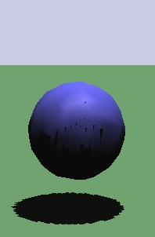
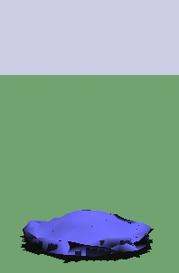
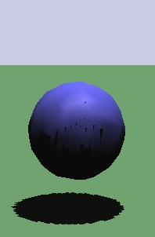
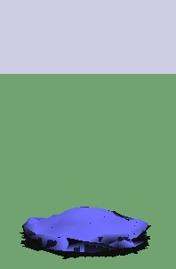
体積保存されなかった場合の例
これを解決するための方法として，Bulletでは2つのアプローチを用いている． 1つは物体内部にもバネを追加する方法である． 形状表面は三角形ポリゴンの集合で表される． 内部にバネを追加する場合は，物体内部に四面体メッシュ(Tetrahedral mesh)を定義して(下図参照)， そのエッジにバネを設定するなどする． Bulletで四面体メッシュを使う場合にはあらかじめ四面体メッシュ情報を持ったファイルを用意する必要がある． ファイルを読み込み後，btSoftBodyHelpers::CreateFromTetGenDataで四面体メッシュを持つbtSoftBodyを作成する． 四面体メッシュを作成するライブラリにはtetgenなどがある．


四面体メッシュの例(左:表面ポリゴン，右:内部の四面体メッシュをワイヤフレームで描画)
2つめとして，バネ-質点の定義は表面だけにしておき，
その体積を保つような力をかけるという方法がある．
これはちょうど航空力学で各質点に力を加えたように，
現在の物体の体積に応じた圧力から計算した力を質点に働かせることで，
物体がつぶれてしまうのを防ぐ．詳しい理論はこちらの論文
を参考にしてほしい．
本実習では表面の三角形メッシュのみを用いた2つめの方法を主に用いる．
それでは具体的に3次元の物体を設定してみよう． btSoftBodyHelpers::CreateEllipsoid関数を用いると楕円体形状のメッシュを生成できる．
btSoftBody *sphere = btSoftBodyHelpers::CreateEllipsoid(g_softBodyWorldInfo,
btVector3(0, 0, 0), // 中心座標
btVector3(0.5, 0.5, 0.5), // 各軸方向の半径
28); // 総ノード数
sphere->getCollisionShape()->setMargin(0.05);
sphere->setTotalMass(1.0); // 全体の質量
sphere->m_materials[0]->m_kLST = 0.5;
この例では各軸方向の半径をすべて同じにしているので，半径0.5の球が生成される．
次に体積保存のための係数などを設定していく．
sphere->m_cfg.kVC = 20.0; sphere->setPose(true, false);
kVCは体積保存のための係数([0,∞])で大きいほど体積保存性が高くなるが， 余り大きすぎると計算が不安定になるので注意． 下図は体積保存を上記のように設定したときの例で， 上の方で示した図と異なり，体積を保存するような変形になっている (ちょうど空気を入れた柔らかいゴムボールのような変形となる)． setPose関数では第1引数で体積保存のON/OFF，第2引数で内部フレームのON/OFFを切り替えることができる． フレームをONにする(第2引数をtrueにする)とより元の全体的な形状を保存するようになる．

体積保存した例
デフォルトではbtSoftBodyはbtRigidBodyと衝突するが， btSoftBody同士では衝突しない．衝突処理させたい場合は，
sphere->m_cfg.collisions |= btSoftBody::fCollision::VF_SS;
とする．VF_SSはSoftBody同士で頂点(Vertex)と面(Face)の衝突処理を行うためのフラグである．
さらに，btSoftBodyHelpers::CreateFromTriMesh関数を使うと任意形状の三角形メッシュを読み込んでbtSoftBodyに設定できる． ただし，そのためには三角形メッシュファイル(3Dモデルファイル)を用意する必要がある． 3Dモデルファイルの読み込みについては次の章で説明する．
練習問題7
上記の実装を実際にやってみよう．また，kVCの値や全体の質量，密度(setTotalDensity関数で設定)を変えて試してみよう．
3Dモデルの設定
btSoftBodyの場合は，三角形ポリゴンを設定するのにbtSoftBodyHelpers::CreateFromTriMeshを用いる．
CreateFromTriMesh関数を用いてbtSoftBodyに形状を設定するコード例を以下に示す．
// 三角メッシュからSoftBodyを作成（btSoftBodyHelpersを使用） btSoftBody* soft_body = btSoftBodyHelpers::CreateFromTriMesh(g_softBodyWorldInfo, vertices, indices, index_count); soft_body->getCollisionShape()->setMargin(0.01);
あとは，これまでやってきたbtSoftBodyのものと同様にして，kLSTやkVCなどの値を設定してやればよい． また，これまでと異なり，CreateFromTriMeshでは物体の位置を直接指定していない(頂点位置verticesで指定は出来るが)． 位置を変えるためにはbtSoftBodyのtransform関数を用いる． 例えば，位置pos (btVector3型)，姿勢qrot (btQuaternion型) に移動させたいならば，以下のようなコードを追加する．
btTransform trans; trans.setIdentity(); // 位置姿勢行列の初期化 trans.setOrigin(pos); // 初期位置 trans.setRotation(qrot); // 初期姿勢 soft_body->transform(trans);
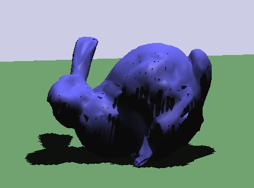
bunny.objを読み込んで設定した例
練習問題8
btSoftBodyとして三角形ポリゴンを登録して，任意形状の弾性体シミュレーションを実行してみよう．
練習問題9(option)
btSoftBodyではこれまで照会したパラメータ以外に様々なものがある．例えば，
- m_cfg.kMT : Pose Matching係数([0,1])．元の形状を保とうとする力を働かせる
- m_cfg.kDP : 減衰(Damping)係数([0,1])．空気抵抗
- m_cfg.kDF : 動摩擦係数([0,1])
- m_materials[0]->m_kAST : 回転に対する剛性
などである．これらを設定してみてどのように変化するか確かめてみよう． また，その他のパラメータはbtSoftBody.hに書かれているのでチェックしてみよう．